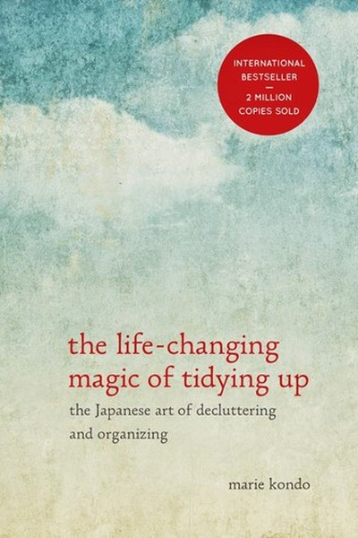

Library › Productivity
The Life-Changing Magic of Tidying Up — Summary & Key Lessons

The Japanese art of decluttering and organizing — one category at a time.
📖 OPEN THE FULL INTERACTIVE BREAKDOWN →🌐 Read it in Hindi, Hinglish, Gujarati, Tamil & 22 more languages — free, with audio.
💡 The Big Idea
Kondo's radical idea: tidying is not a chore you repeat but a single, life-changing event you complete once — if you do it right. Her method: discard first (keep only what sparks joy), then organize by category (clothes, books, papers, komono, sentimental) in the right order, and give everything a home. The result is not just a clean room but a changed relationship with possessions — and with yourself. Tidy the space, and the mind follows.
🧠 The 6 Key Lessons
Lesson 1: Tidy by Category, Not by Location
The Method
Most people tidy room by room — which guarantees they never finish, because the same categories (clothes, books) live in multiple rooms. Kondo's rule: tackle one category at a time, gathering every item of that category into one place first. Only then can you see the true volume and decide what to keep.
📖 Example: Gathering every piece of clothing from every room and closet into one pile is confronting — and necessary — because it shows you the truth of what you own. The practical edge: 'tidy by category, not by location' is not a one-time decision — it's a habit that… Read the full example →
⚡ Do this: Pick one category (start with clothes). Gather every item in one place. Then begin the keep/discard conversation.
Lesson 2: Keep Only What Sparks Joy
The Criterion
Kondo's famous standard: hold each item and ask if it sparks joy. If yes, keep; if not, thank it and let it go. The criterion sounds soft but is brutally practical — it bypasses rationalization ('I might need it someday') with a direct emotional read. Joy is the only filter you won't lie to yourself about.
📖 Example: Books you've 'meant to read for years' fail the spark test instantly — the guilt of ownership is not joy. Here's the part that usually gets missed: 'keep only what sparks joy' works quietly. You won't see it working in a day; you'll only see the results… Read the full example →
⚡ Do this: Apply the spark-joy test to 20 items this week. Thank each discarded item and let it go.
Lesson 3: Discard First, Organize Second
The Order
Kondo's sequence matters: discard before organize. Organizing clutter you don't need is just arranging a problem. Most people organize first, which is why their homes stay cluttered. The rule: reduction first, then storage. Tidying becomes permanent because the volume of stuff is finally honest.
📖 Example: Buying storage boxes before discarding is how closets stay full — the storage just relocates the clutter. The real test of this lesson is a bad day: the principle that survives a crisis, a tight deadline and a doubting colleague is the one that's actually… Read the full example →
⚡ Do this: Before buying any storage solution, discard first. If the category fits without new storage, you've done it right.
Lesson 4: The Right Order: Clothes, Books, Papers, Komono, Sentimental
The Sequence
Kondo orders categories by difficulty: clothes (easiest), books, papers, miscellaneous (komono), and sentimental items last. The order trains your decision muscle progressively, so that by the time you reach sentimental items — the hardest — you're skilled at deciding. Going sentimental first is the classic failure.
📖 Example: People who start with old letters and photos stall immediately — the emotional weight is too heavy for untrained decision-making. In practice, 'right order' shows up in tiny daily choices long before it shows up in outcomes — the choice is invisible, but it… Read the full example →
⚡ Do this: Plan your tidying in Kondo's order. Don't touch sentimental items until the earlier categories are done.
Lesson 5: Give Everything a Home
The Storage
After discarding, every kept item needs a designated home — a specific place it always returns to. Kondo's insight: clutter is not too many things; it's things without homes. When everything has a place, cleaning becomes putting things back — a two-minute act instead of a weekend project.
📖 Example: The 'clean desk' person isn't tidier — every item simply has a fixed home, so tidying is automatic. Most people nod at this principle and change nothing. The gap between agreeing and acting is where the whole game is won or lost. Read the full example →
⚡ Do this: Choose five items that currently live 'wherever' and give each a permanent home today.
Lesson 6: Tidy the Space, Transform the Life
The Result
Kondo's boldest claim: completing a full tidying event changes your life — people lose weight, change jobs, end bad relationships, start businesses. Why? Because the practice of choosing what sparks joy teaches you to make that decision everywhere. Tidying is decision-training in physical form.
📖 Example: Clients who finish the process report clarity in career and relationships — the same 'keep what sparks joy' filter applied to everything. The uncomfortable truth about this lesson: it requires doing the boring version first — the unglamorous reps that nobody… Read the full example →
⚡ Do this: Use the joy-filter on one non-physical choice this week: a commitment, a habit, a relationship. Keep what sparks joy, release the rest.
✅ 5-Step Action Plan
- Start with clothes: gather all, keep only what sparks joy.
- Follow Kondo's order: clothes → books → papers → komono → sentimental.
- Discard before buying any storage.
- Give five homeless items permanent homes.
- Apply the joy-filter to one life decision.
⚠️ When This Doesn't Work
Kondo's 'keep only what sparks joy' assumes the problem is too many possessions — Wish shows the other side: a company that made owning things absurdly cheap and easy, and the 'joy' of acquisition became a landfill of regret. Minimalism as personal practice is lovely; the caveat is when it becomes judgmental — 'you clutter because you lack discipline' — aimed at people whose stuff is tied to poverty, memory or caregiving. Tidying is a privilege with a budget. Kondo's method is a tool, not a moral yardstick.
💀 The Graveyard Proves It
🛍️ Wish — From $140 to $0.13: The Shopping App That Bet on Cheapest. Burn: $140B → $20M: a 99.99% collapse in four years. Read the full case study →
💬 Best Quotes from The Life-Changing Magic of Tidying Up
- “The question of what you want to own is actually the question of how you want to live your life.”
- “Tidying is a series of simple tasks — but its effects can be life-changing.”
- “Keep only things that spark joy.”
Interactive version: mark lessons as read, listen in your language, share quote cards.